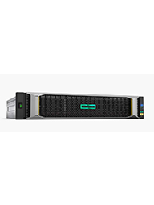

HPE MSA Storage Tech Specs:
Models include the MSA2050, 2052, 1050 and MSA 2040, 2042, 1040
MSA 2050:
- Controller Choices:
- 2050 SAN dual controller LFF Storage
- 2050 SAN dual controller SFF Storage
- 2050 SAS dual controller LFF Storage
- 2050 SAS dual controller SFF Storage
- SFF 12G SSD 400GB, 800GB, 1.6TB, 3.2TB
- SFF 12G 15K 300GB, 450GB, 600GB, 900GB
- SFF 12G 10K 300GB, 600GB, 900GB, 1.2TB
- SFF 12G MDL 7.2K 1TB, 2TB
- LFF 12G SSD 400GB, 800GB
- LFF 12G 7.2K 2TB, 4TB, 6TB, 8TB, 10TB
- Max Capacity LFF 960TB SFF 614.4TB
- Max enclosures 7
- 8G or 16G FC
- 1 / 10 GbE iSCSI
- Max HDD per array 96 LFF, 192 SFF
- 128TiB max lun size
- Max LUNs 512
- Max read cache 8TB per array
- Max data cache 16GB
- Random read IOP 220,600
- Random write IOP 102,800
Features:
- Thin Provisioning
- Tiering
- Snapshots
- Replication
- Quality of Service
MSA 2052:
- Controller Choices:
- 2052 SAN dual controller LFF Storage
- 2052 SAN dual controller SFF Storage
- 2052 SAS dual controller LFF Storage
- 2052 SAS dual controller SFF Storage
- SFF 12G SSD 400GB, 800GB, 1.6TB, 3.2TB
- SFF 12G 15K 300GB, 450GB, 600GB, 900GB
- SFF 12G 10K 300GB, 600GB, 900GB, 1.2TB
- SFF 12G MDL 7.2K 1TB, 2TB
- LFF 12G SSD 400GB, 800GB
- LFF 12G 7.2K 2TB, 4TB, 6TB, 8TB, 10TB
- Max Capacity LFF 960TB SFF 614.4TB
- Max enclosures 7
- 8G or 16G FC
- 1 / 10 GbE iSCSI
- Max HDD per array 96 LFF, 192 SFF
- 128TiB max lun size
- Max LUNs 512
- Max read cache 8TB per array
- Max data cache 16GB
- Random read IOP 220,600
- Random write IOP 102,800
Features:
- Thin Provisioning
- Tiering
- Snapshots
- Replication
- Quality of Service
MSA 1050:
- Controller Choices:
- 1050 SAN dual controller LFF Storage
- 1050 SAN dual controller SFF Storage
- 1050 SAS dual controller LFF Storage
- 1050 SAS dual controller SFF Storage
- SFF 12G SSD 400GB, 800GB, 1.6TB, 3.2TB
- SFF 12G 15K 300GB, 450GB, 600GB, 900GB
- SFF 12G 10K 300GB, 600GB, 900GB, 1.2TB
- SFF 12G MDL 7.2K 1TB, 2TB
- LFF 12G SSD 400GB, 800GB
- LFF 12G 7.2K 2TB, 4TB, 6TB, 8TB, 10TB
- Max Capacity LFF 480TB SFF 307.2TB
- Max enclosures 3
- 8G FC
- 1 / 10 GbE iSCSI
- Max HDD per array 48 LFF, 96 SFF
- 128TiB max lun size
- Max LUNs 512
- Max read cache 4TB per array
- Max data cache 12GB
- Random read IOP 69,100
- Random write IOP 30,600
Features:
- Thin Provisioning
- Tiering
- Snapshots
- Replication
- Quality of Service
MSA 1040:
- 1040 2-port FC LFF Storage
- 1040 2-port FC SFF Storage
- 1040 2-port SAS LFF Storage
- 1040 2-port SAS SFF Storage
- 1040 2-port 1GbE iSCSI LFF Storage
- 1040 2-port 1GbE iSCSI SFF Storage
- 1040 2-port 10GbE iSCSI LFF Storage
- 1040 2-port 10GbE iSCSI SFF Storage
- Supports ProLiant SFF drive and MSA SFF drives.
- SFF 12G SSD 200GB, 400GB, 800GB, 1.6TB, 3.2TB
- SFF 12G 15K 300GB, 450GB, 600GB, 900GB
- SFF 12G 10K 300GB, 600GB, 900GB, 1.2TB, 1.8TB
- SFF 12G MDL 7.2K 1TB, 2TB
- LFF 12G SSD 400GB, 800GB
- LFF 12G 15K 300GB, 450GB, 600GB
- LFF 12G MDL 7.2K 2TB, 4TB, 6TB, 8TB, 10TB
- Max Capacity LFF 480TB SFF 178TB
- Max enclosures 3 + array
- 8G FC
- 1 / 10 GbE iSCSI
- Two host ports per controller
- 48 LFF drives or 99 SFF drive max
- 128TiB max lun size
- 512 max luns
- Cache 4GB per controller
- 3100/1900 MB/s R/W Sequential
- 29k/20k IOps R/W random
Features:
- Thin Provisioning (Opt)
- T-10 Unmap (Opt)
- Archive Tiering (Opt)
- Wide Striping (Opt)
- Virtualized and Linear storage (Opt)
- Redirect on write snapshots (Opt)
- Expandable Dual Controllers
- Non disruptive controller updates.
- Many to 1 replication
MSA 2040:
-
2040 SAN Controller LFF Storage
-
2040 SAN Controller SFF Storage
- 2040 SAS Controller LFF Storage
-
2040 SAS Controller SFF Storage
-
SFF 12G SSD 200GB, 400GB, 800GB, 1.6TB, 3.2TB
- SFF 12G 15K 300GB, 450GB, 600GB
- SFF 12G 10K 300GB, 600GB, 900GB, 1.2TB
- SFF 12G (mixed Use) 400GB, 800GB, 1.6TB, 3.2TB
- SFF 12G 7.2K 1TB, 2TB
- SFF SED 10K 1.2TB
- LFF 12G SSD 400GB, 800GB
- LFF 12G 15K 300GB, 450GB, 600GB
- LFF 12G 7.2K 4TB, 6TB, 8TB, 10TB
- LFF SED 7.2K 4TB
- Max Capacity LFF 800TB SFF 398TB
- Max enclosures 7 + array
- 8G or 16G FC
- 1 / 10 GbE iSCSI
- 6G / 12G SAS connectivity
- Four host ports per controller
- 96 LFF drives or 199 SFF drive max.
- 128TiB max lun size
- 512 max luns
- Cache 4GB per controller
- 6400/4500MB/s R/W Sequential
- 82k/30k IOps R/W Random
MSA 2042:
- 2042 SAN Controller LFF Storage
- 2042 SAN Controller SFF Storage
- 2042 SAS Controller LFF Storage
- HPE MSA 2042 SAS Controller SFF Storage
- SFF SSD 400GB, 800GB, 1.6TB, 3.2TB
- SFF 12G 15K 300GB, 450GB, 600GB, 900GB
- SFF 12G 10K 300GB, 600GB, 900GB, 1.2TB, 1.8TB
- SFF 12G 7.2K 1TB, 2TB
- LFF 12G SSD 400GB, 800GB
- LFF 12G 15K 300GB, 450GB, 600GB
- LFF 12G 7.2K SAS: 4TB, 6TB, 8TB
- Max Capacity per enclosure LFF 96 TB SFF 76.8 TB
- Max capacity 768TB
- Max enclosures 7 + array
- Max volumes 512
- Max Snapshots 512
- Max hosts 512
- Max initiators 1024
- Max Lun size 140TB (128TiB)
- 8G or 16G FC
- 1 / 10 GbE iSCSI
- 6G / 12G SAS connectivity
- Four host ports per controller
- 96 LFF drives or 199 SFF drive max.
- 128TiB max lun size
- 512 max luns
- Cache 12GB per controller
Feaures:
- Thin Provisioning
- T-10 Unmap
- Automated SubTiering
- Wide Striping
- Virtualized and Linear storage
- Redirect on write snapshots
- SSD Read Cache
- 12 GB SAS
- 16G FC
- Expandable Dual Controllers
- Supports Self encrypting drives
- Non disruptive controller updates.